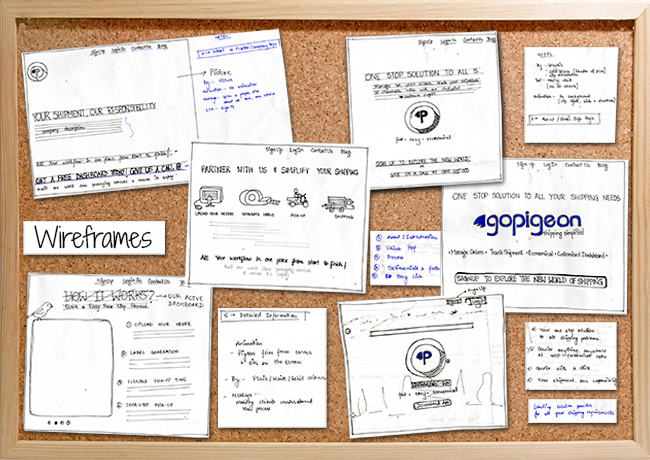
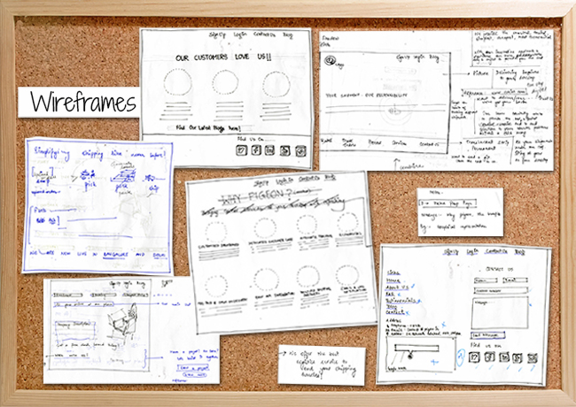
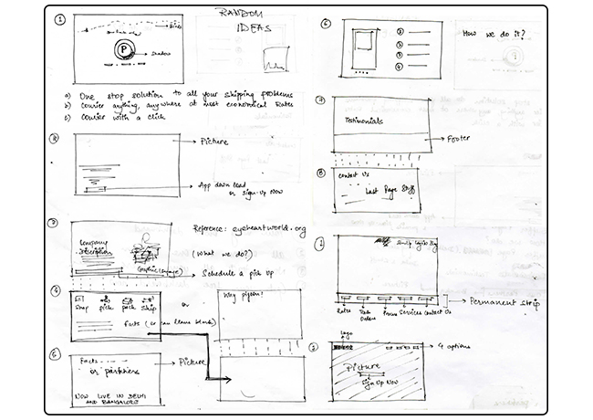
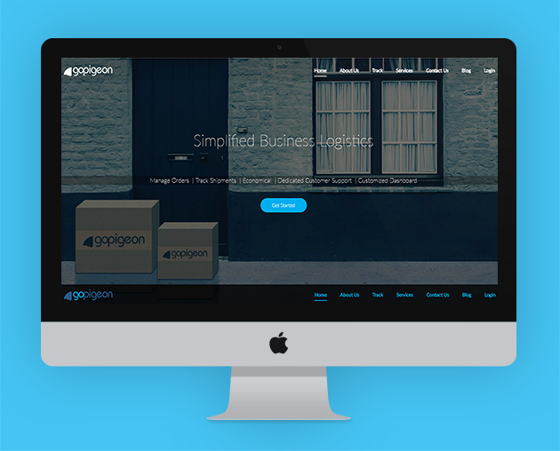
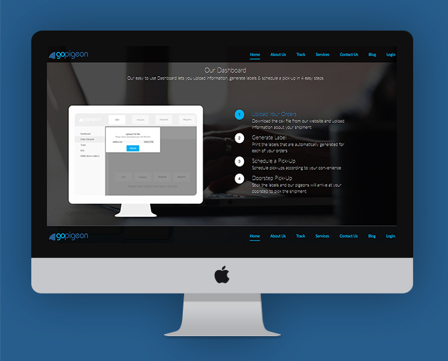
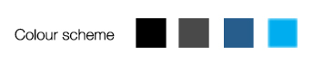
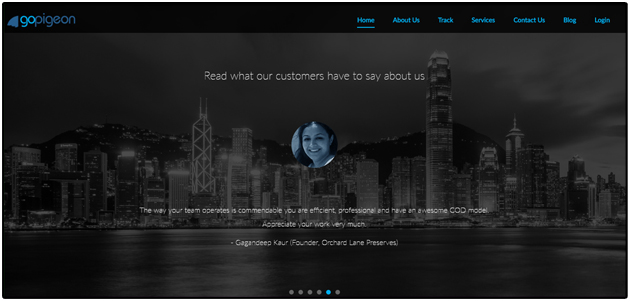
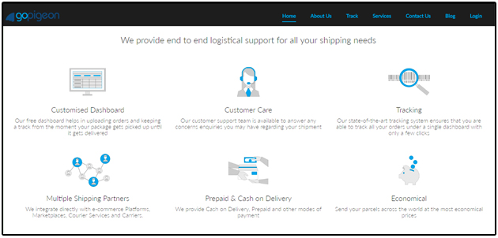
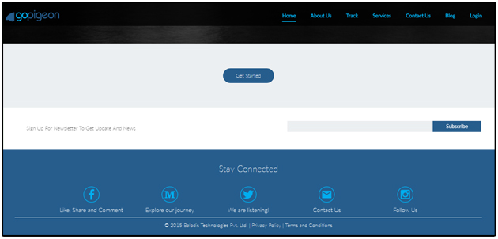

GoPigeon
Overview
Concetualization and design of the website for GoPigeon, a logistics start-up in Bangalore
Description
In my fourth year I worked as a product and marketing intern at an upcoming logistics start-up in Bangalore named GoPigeon. I was responsible for wire framing and conceptualization of website from scratch; and managed content to improve organic traffic by 20%. During that time the company was transitioning from a B2B model to a B2C model where I facilitated brand communication and market positioning from B2C to B2B model by redesigning core UX solutions and market strategy. I worked under and coordinated with the marketing head and the product design team. I was also responsible for logos, icons, graphics, content etc.
GoPigeon, Balodis Technologies, Bangalore, 2015

Mock-Up of the Website
Ideaboards and wireframes
Ideaboards and wireframes
Ideaboards and wireframes
I made several wireframes before finalizing the website design. Various discussions and iterations happened to arrive at the final design.
Landing page
The landing page is kept simple with a light wash of blue overlay with keeping the ‘action’ button highlighted. The font Lato is used. The background image is non distracting with the compnay name and website logo on the boxes subtly depicting the theme of logistics.
Dashboard page
A dashboard was created to help the customers which made the process easier. A step by step animated guide was created.
 Testimonial Page
Icon design for the website
